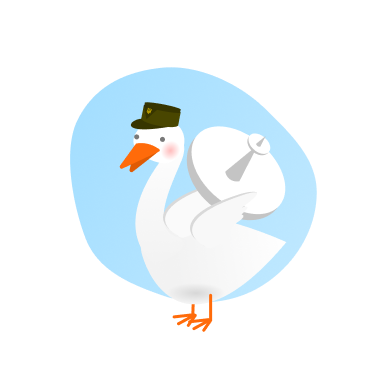
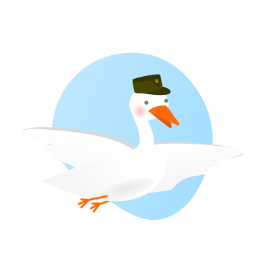

Доброго вечора, ми з України
На старт. Увага. Полетіли!
Бандерогусь
Спеціальний бойовий гусак із біолабораторій України. Пишаюся своїми подвигами, бороню Батьківщину та підтримую позитивний дух народу. Слава Україні!
Цікаві факти про бандерогусей
Зазвичай бандерогуси — виключно мирні птахи. Але у разі небезпеки можуть атакувати ворога системою надпотужного озброєння. Також нищать психологічно, активуючи високочастотне шипіння та розмахування крилами
-

Система навігації
Супутниковий GPS та ехолокатори розпізнають ворожу техніку навіть на етапі збірки
-

Очі-тепловізори
Допомагають виявити характер сигнатури об’єктів та значно підвищують точність удару
-

Байракрила
Можуть нести 2-4 керовані ракети, що вражають ціль на відстані «ніхріна собі» кілометрів